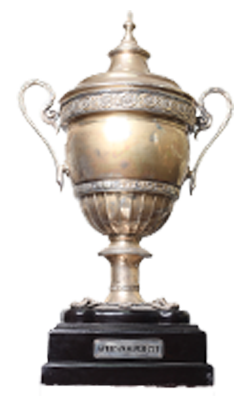

(5 times) CAF Champions league
(13 times) EGY league
(27 times) EGY CUP

(1 time) CAF Confederation Cup
(4 times) CAF Super Cup

Zamalek, is an Egyptian sports club based in Cairo. The club is mainly known for its professional football team, which plays in the Egyptian Premier League, the top tier of the Egyptian football league system.[5] The club was founded on 5 January 1911 as Qasr El Nile Club and was first headed by the Belgian lawyer George Merzbach. The name was changed two years later to Cairo International Sports Club (C.I.S.C.),[6] which was colloquially referred to as El Qāhirah El Mokhtalat Club, or El Mokhtalat Club. The club was named in 1941 after King Farouk of Egypt and became known as Farouk El Awal Club (transl. Farouk I Club). After the 1952 Egyptian revolution, the club changed its name to Zamalek.[7] Zamalek established itself as the first major force in Egyptian football during the 1920s, as it became the first Egyptian team to win titles. Zamalek was the first Egyptian team to win Sultan Hussein Cup in 1921 and 1922; the first team to win Egypt Cup in 1922;[8] and the first team to win Cairo League in 1922–23.[9] It is one of two clubs that have played in every season of the Egyptian Premier League, and one of seven clubs that have never been relegated to the Egyptian Second Division. On the international spotlight it has won five CAF Champions League titles, one CAF Confederation Cup title, four CAF Super Cup titles and one African Cup Winners' Cup title; making it one of the most successful clubs in Africa. It is also the first Egyptian team to ever win the CAF Super Cup when it beat archrival Al Ahly in the 1994 CAF Super Cup. At the international level, Zamalek is the first Egyptian team to participate in and win the Afro-Asian Cup in 1987; and holds the record for most participations (1987, 1994, and 1997), and most titles, after winning it a second time in 1997.
Nickname(s) Madrasat Al-Fin W Al-Handasa (The School of Art and Engineering) Al-Nadi Al-Malaki (The Royal Club) [2] Al-Qalaa Al-Baydaa (The White Castle) Al-Fares Al-Abyed (The White Knight) Nadi Al-Qarn Al Afreky Al-Haqiqi (The Real African Club of the Century)